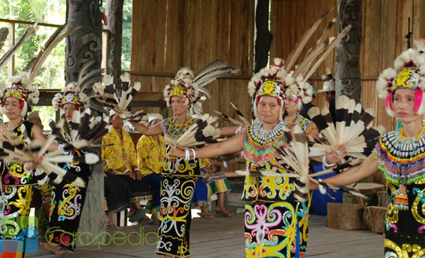

Mengenal Jenis-Jenis Tarian Suku Dayak

Pulau Kalimantan terutama Suku Dayak terkenal dengan kesenian tari-tarian yang eksotik. Tari-tarian tersebut memiliki makna tersendiri di kalangan masyarakat Dayak karena biasanya digunakan selain untuk menyambut tamu penting juga sebagai pelengkap saat upacara adat berlangsung. Melalui tarian-tarian tersebut, para penari Dayak menggerakkan tubuh mereka dengan iringan musik khas Suku Dayak. Tarian-tarian tersebut berkesan mistis, religious, dan penuh dengan nuansa seni.
Jenis-jenis tarian Dayak berikut ini merupakan tarian yang sering kita dengar dan sering ditampilkan di pertunjukan umum dalam sebuah acara baik formal, adat maupun saat pernikahan:
1. Tari Gantar
Tarian ini cukup terkenal untuk menyambut para tamu di acara-acara formal. Tarian ini dikenalkan oleh Suku Dayak Tunjung dan Dayak Benuaq. Oleh suku Dayak, tarian ini terbagi atas 3 macam yaitu tari Gantar Busai, tari Gantar Raytn dan Gantar Senak atau Gantar Kusak. Cerita tarian tersebut menggambarkan orang yang sedang menanam padi. Tongkat yang digunakan sebagai simbol kayu penumbuk padi, selain itu juga menggunakan bambu dan biji-bijian untuk simbol benih padi dan wadah benih tersebut.
2. Tari Kancet Papatai/Tari Perang
Tarian bergenre perang ini menggambarkan kejantanan dan keperkasaan pria dalam sebuah peperangan antara pahlawan Dayak Kenyah dan musuhnya. Ritme tarian sangat gesit, lincah dan penuh semangat terkadang penarinya memekikkan teriakan khas suku Dayak. Kostum yang digunakan adalah pakaian tradisional Dayak Kenyah lengkap dengan peralatan mandau, baju perang dan perisai. Tarian ini menjadi lebih rancak karena iringan menggunakan alat musik Sampe memainkan lagu Sak Paku.
3. Tari Kancet Ledo/Tari Gong
Tarian ini kebalikan dari tari Pepatai, simbol dari kelemah-lembutan gadis yang digambarkan sebagai sebatang padi yang tertiup angin. Tarian ini khusus dibawakan oleh seorang wanita dengan pakaian khas Dayak Kenyah, pada kedua tangannya membawa rangkaian bulu ekor burung Enggang. Wanita penari akan menari di atas sebuah gong, sehingga banyak orang menyebut tarian ini sebagai tarian Gong.
4. Tari Kancet Lasan
Tari Kancet Lasan adalah gambaran kehidupan burung Enggang. Suku Dayak sangat memuliakan burung ini karena sebagai simbol kepahlawanan dan keagungan. Tarian ini mirip dengan tarian Kandet Ledo, dibawakan oleh seorang wanita Dayak Kenyah namun penari tidak menggunakan bulu ekor Enggang dan gong. Posisi penari lebih banyak merendah atau berjongkok dan duduk dengan lutut menyentuh tanah. Tarian ini lebih banyak menceritakan tentang burung Enggang yang sedang terbang di angkasa dan sedang bertengger di batang pohon.
5. Tari Serumpai
Tarian Serumpai berasal dari suku Dayak Benuaq diiringi oleh alat musik Serumpai (seruling bambu). Tarian ini dimaksudkan untuk menolah wabah penyakit dan mengobati orang yang terkena rabies. Sehingga tarian ini lebih sering digunakan sebagai upacara adat Dayak.
6. Tarian Belian Bawo
Tarian ini juga digunakan untuk menolak wabah penyakit, proses menyembuhkan/mengobati orang sakit, membayar nazar dan sebagainya. Dulunya tarian ini adalah sebuah upacara namun setelah perubahan zaman, akhirnya dijadikan tarian dan dipertontonkan di depan orang banyak. Tarian ini berasal dari suku Dayak Benuaq.
7. Tari Kuyang
Tarian ini adalah sebuah upacara dulunya dan menggambarkan suku Dayak yang mengusir hantu-hantu penjaga pohon dan agar tidak mengganggu manusia. Biasanya digunakan oleh orang Dayak sebelum menebang pohon-pohon besar agar tidak terjadi masalah.
8. Tarian Pecuk Kina
Dalam sejarah, suku Dayak Kenyah pernah berpindah tempat dari daerah Apo Kayan (Kabupaten Bulungan) ke Long Segar (Kabupaten Kutai Barat) selama bertahun-tahun. Tarian Pecuk Kina menggambarkan cerita sejarah tersebut.
9. Tarian Datun
Tarian ini dibawakan oleh gadis-gadis Dayak 10 – 20 orang. Konon, tarian ini diciptakan oleh Kepala suku Dayah Kenyah di daerah Apo Kayan yaitu Nyik Selung. Tarian ini adalah gambaran kegembiraan dan tanda syukur atas kelahiran cucunya.
10. Tari Ngerangkau
Tari Ngerangkau dapat disimbolkan sebagai tarian kematian yang berasal dari suku Dayak Tunjung dan Benuaq. Tarian ini menggunakan alat penumbuk padi yang dibenturkan dengan irama teratur dan posisi mendatar sehingga dapat menghasilkan musik khas tarian tersebut.
11. Tarian Baraga’Bagantar
Tarian ini pada mulanya hanya sebuah upacara adat belian. Dalam upacara memreka memohon bantuan dari seorang Nayun Gantar untuk merawat bayi. Kemudian oleh suku Dayak Benuaq, upacara adat tersebut dijadikan sebuah tarian.